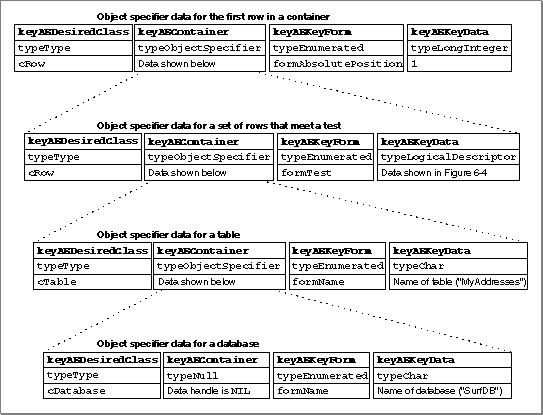
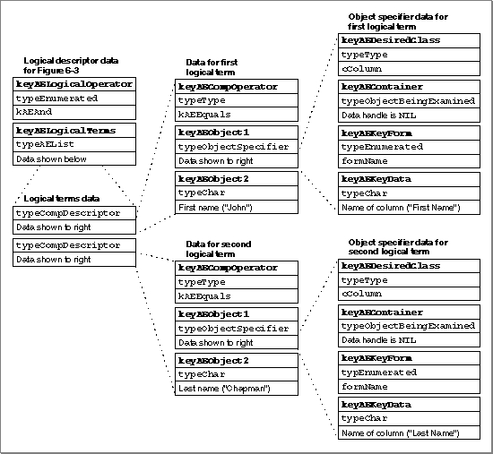

Key Data for a Unique ID
The key data forformUniqueIDconsists of a value that identifies an object. This ID must be unique either within the container, at a minimum, or unique across the application. A unique ID can be specified by a descriptor record of any appropriate type; for example, typetypeInteger.Key Data for Absolute Position
The key data forformAbsolutePositionconsists of an integer that specifies either an offset or an ordinal position. For descriptor typetypeLongInteger, the data is either a positive integer, indicating the offset of the requested element from the beginning of the container, or a negative integer, indicating its offset from the end of the container. The first object specifier record shown in Figure 6-2 on page 6-9 specifiesformAbsolutePositionwith key data that consists of the positive integer 1.For descriptor type
typeAbsoluteOrdinal, the data consists of one of these constants:If an object specifier record specifies
kAEMiddleand the number of elements in the container is even, the Apple Event Manager rounds down; for example, the second word would be the "middle" word in a range of four words.Key Data for Relative Position
The key data forformRelativePositionis specified by a descriptor record of typetypeEnumeratedwhose data consists of one of these constants:
Constant Meaning kAENext The Apple event object after the specified container kAEPrevious The Apple event object before the specified container The "container" can be a single Apple event object or a group of Apple event objects; the requested elements are located immediately before or immediately after it, not inside it.
If your application can locate objects of the same class by absolute position, it can easily locate the same objects by relative position. For example, all applications that support
formAbsolutePositioncan easily locate the table immediately after a container specified as another table named "Summary of Sales."Some applications may also be able to locate an object of one class before or after an object of another class. For example, a word processor might be able to locate the paragraph immediately after a container specified as a table named "Summary of Sales."
Key Data for a Test
The key data forformTestis specified by either a comparison descriptor record or a logical descriptor record. If your application provides an object-counting function and an object-comparison function in addition to the appropriate object accessor functions, the Apple Event Manager can handleformTestfor you. Some applications may perform tests more efficiently by translating them into the application's own query language. For information about handling tests yourself, see "Handling Whose Tests," which begins on page 6-47.The container for objects that pass a test can be one or more Apple event objects. The objects specified are those in the container that pass the test specified by the key data. For example, an object specifier record can describe "the first row in which the First Name column equals 'John' and the Last Name column equals 'Chapman' in the table 'MyAddresses' of the database 'SurfDB.'" To resolve such an object specifier record, the Apple Event Manager must evaluate a logical expression that applies the logical operator
ANDto two separate comparisons for each row: a comparison of the First Name column to the word "John" and a comparison of the Last Name column to the word "Chapman."The Apple Event Manager evaluates comparisons and logical expressions on the basis of the information in comparison descriptor records and logical descriptor records. A comparison descriptor record is a coerced AE record of type
typeCompDescriptorthat specifies an Apple event object and either another Apple event object or data for the Apple Event Manager to compare to the first object. The Apple Event Manager can also use the information in a comparison descriptor record to compare elements in a container, one at a time, either to an Apple event object or to data. The data for a comparison descriptor record consists of three keyword-specified descriptor records with the descriptor types and data shown in Table 6-2.The keyword
keyAEObject1identifies a descriptor record for the element that is currently being compared to the object or data specified by the descriptor record for the keywordkeyAEObject2. Either object can be described by a descriptor record of typetypeObjectSpecifierortypeObjectBeingExamined. A descriptor record oftypeObjectBeingExaminedacts as a placeholder for each of the successive elements in a container when the Apple Event Manager tests those elements one at a time. The keywordkeyAEObject2can also be used with a descriptor record of any other descriptor type whose data is to be compared to each element in a container.You don't have to support all the available comparison operators for all Apple event objects; for example, the "begins with" operator probably doesn't make sense for objects of type
cRectangle. It is up to you to decide which comparison operators are appropriate for your application to support, and how to interpret them.
If necessary, you can define your own custom comparison operators. If you think you need to do this, check with the Apple Event Registrar first to find out whether existing definitions of comparison operators or definitions still under development can be adapted to the needs of your application.A logical descriptor record is a coerced AE record of type
typeLogicalDescriptorthat specifies a logical expression--that is, an expression that the Apple Event Manager evaluates to eitherTRUEorFALSE. The logical expression is constructed from a logical operator (one of the Boolean operatorsAND,OR, orNOT) and a list of logical terms to which the operator is applied. Each logical term in the list can be either another logical descriptor record or a comparison descriptor record. The Apple Event Manager short-circuits its evaluation of a logical expression as soon as one part of the expression fails a test. For example, if while testing a logical expression such as AANDBANDC the Apple Event Manager discovers that AANDB is not true, it will evaluate the expression toFALSEwithout testing C.The data for a logical descriptor record consists of two keyword-specified descriptor records with the descriptor types and data shown in Table 6-3.
If the logical operator is
ANDorOR, the list can contain any number of logical terms, and the logical operator is applied to all the terms in the list. For example, the logical descriptor data shown in Figure 6-4 on page 6-22 consists of the logical operatorANDand a list of logical terms that contains two comparison descriptor records. The entire logical descriptor record corresponds to the logical expression "the First Name column equals 'John'ANDthe Last Name column equals 'Chapman.'" If the logical operator isNOT, the list must contain a single term.Figure 6-3 shows four object specifier records that specify the container hierarchy for the first row in the table "MyAddresses" of the database "SurfDB" that meets a test. The object specifier record at the top of Figure 6-3 specifies the first row contained in the set of rows that form its container. The container for the first row is specified by an object specifier record for a set of rows that meet a test. The two object specifier records at the bottom of Figure 6-3 specify the table named "MyAddresses," which contains the rows to be tested, in the database named "SurfDB."
Figure 6-3 The container hierarchy for the first row in a table that meets a test

The object specifier record in Figure 6-3 for a set of rows that meet a test specifies
formTest. The corresponding key data consists of the logical descriptor record shown in Figure 6-4, which applies the logical operatorANDto two logical terms: a comparison descriptor record that specifies all the rows in the container (the table "MyAddresses") in which the column named "First Name" equals "John," and another comparison descriptor record that specifies all the rows in which the column named "Last Name" equals "Chapman." A row in the table "MyAddresses" passes the test only if both comparison descriptor records evaluate asTRUE.Figure 6-4 A logical descriptor record that specifies a test

The keyword-specified descriptor records with the keyword
keyAEObject1in
Figure 6-4 each consist of an object specifier record that identifies a column by name. The row for each column is specified by a descriptor record oftypeObjectBeingExamined, which acts as a placeholder for each row as the Apple Event Manager tests successive rows in the table. The Apple event object specified by each of these object specifier records consists of a column in the row. The Apple Event Manager (with the help of an object-comparison function) compares the contents of the column in successive rows to the string identified by the keywordkeyAEObject2using the comparison operator identified by the keywordkeyAECompOperator.Key Data for a Range
The key data forformRangeis specified by a range descriptor record, which is a coerced AE record of typetypeRangeDescriptorthat identifies two Apple event objects marking the beginning and end of a range of elements. The data for a range descriptor record consists of two keyword-specified descriptor records with the descriptor types and data shown in Table 6-4.The elements that identify the beginning and end of the range, which are known as boundary objects, do not have to belong to the same object class as the elements in the range itself. If the boundary objects belong to the same object class as the elements in the range, the boundary objects are included in the range. For example, the range of tables specified by boundary elements that are also tables would include the two boundary tables.
The container for boundary objects is usually the same as the container for the entire range, in which case the container for a boundary object can be specified by a placeholder--that is, a descriptor record of type
typeCurrentContainerwhose data handle has the valueNIL.When
AEResolvecalls an object accessor function to locate a range of objects, the Apple Event Manager replaces the descriptor record of typetypeCurrentContainerwith a token for the container of each boundary object. When usingAEResolveto resolve the object specifier record, your application doesn't need to examine the contents of this token, because the Apple Event Manager keeps track of it. If your application attempts to resolve some or all of the object specifier record without callingAEResolve, the application may need to examine the token before it can locate the boundary objects. The token provided by the Apple Event Manager for a boundary object's container is a descriptor record of typetypeTokenwhose data handle refers to a structure of typeccntTokenRecord.TYPE ccntTokenRecord = RECORD tokenClass: DescType; {class ID of container } { represented by token} token: AEDesc; {token for current container} END;This data type is of interest only if you attempt to resolve an object specifier record for a range without callingAEResolve. Otherwise, the Apple Event Manager keeps track of the container.